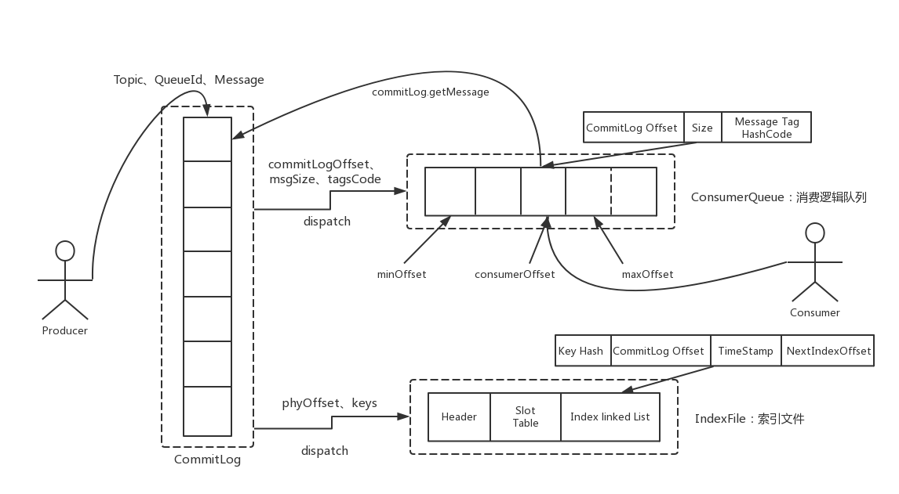
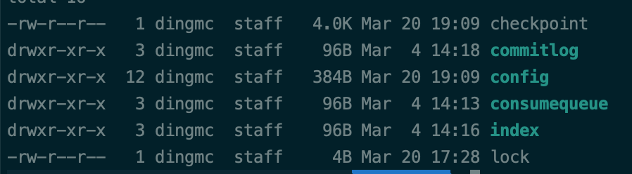
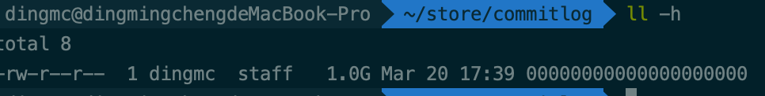
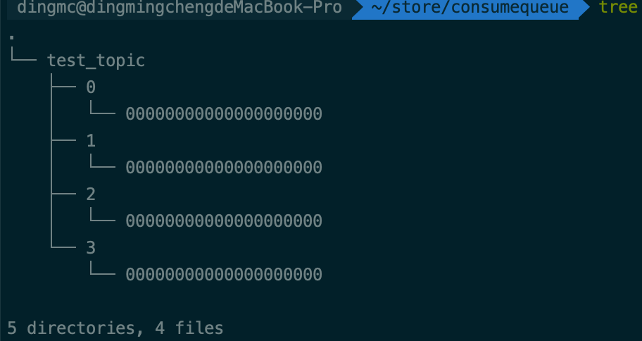
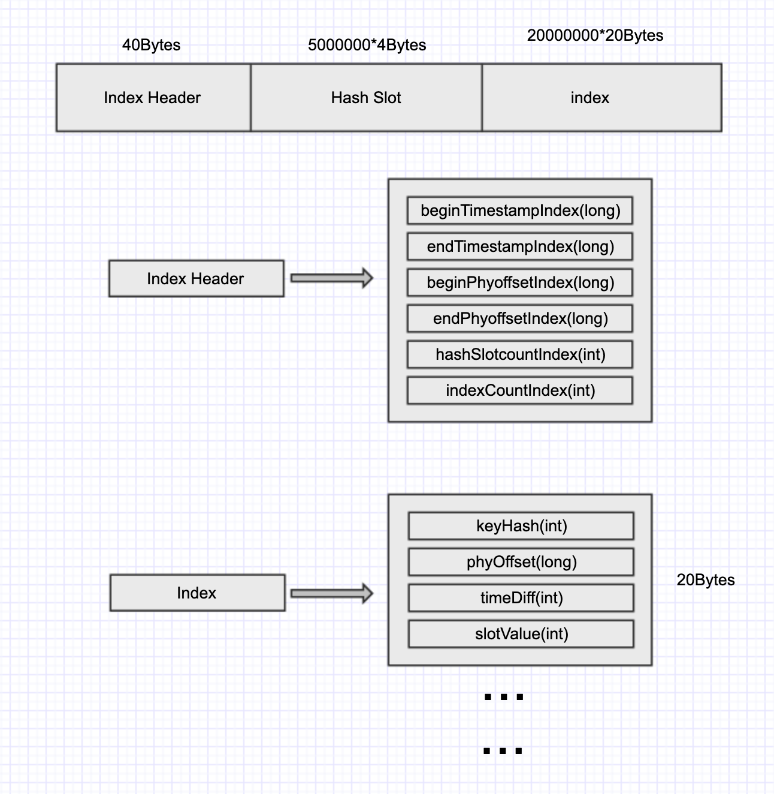

前言
在rocketmq中，store模块，也就是底层存储模块，是最为核心的部分，也在很大程度上决定了rocketmq的性能。rocketmq借鉴了kafka的设计，采用了文件存储。
整体介绍
消费模型
先看看rocketmq的存储架构(图来源于此博文)

可以看到在broker接收到消息后，首先会把消息写入到commitLog中，之后会异步将消息分发给ConsumerQueue和IndexFile，之后相关的细节也将主要围绕commitLog，consumerQueue，indexFIle来讲
存储文件目录
在部署broker的机器上，rocketmq相关数据都存储在了~/store文件夹下，相关日志都存储在~/logs/rocketmqlogs文件夹下。

主要包含4个文件夹，逐个来看看
commitlog

可以看到commitLog只有个大小为1G，名称为全数字的一个文件。
commitLog做为rocketmq中最重要的存储文件，其存储的核心内容正是该broker接收到的所有的消息体，为了保证性能，单个文件的默认值为1G。文件名代表着该文件存储的第一条消息的offset，这么做的理由也很明显，方便搜索消息。在下文中，我们会看看内部数据结构，尝试读取文件的内容
config
config中存储的主要是相关的最后消费的offset，消费delay值，订阅情况等配置信息，主要用于broker在启动时对相关参数的初始化，以及broker停机时相关参数从内存序列化到磁盘上。里面的文件也都是json格式的，也很方便去研究。就不细说了
consumequeue
顾名思义，代表着消费情况，可以看看树形目录图

很明显，它为每个topic创建了一个文件夹，为每个topic的每个queue也创建了一个文件夹，内部的文件也存储了该队列的消费情况。consumerQueue文件的数据结构在等会也会尝试去解读
index
index文件主要用于消息的搜索，文件名称就是文件新建的时间，这命名也方便了根据时间去筛选消息。常用于监控，消息搜素等。文件的数据结构会更复杂一些，下文也会尝试去对文件进行解析。
代码逻辑
再来从源代码上来看看文件的存储细节吧
在netty接收到了消息后，会根据RemotingCommand的code路由到对应的Processor上（接收消息时也就是指SendMessageProcessor）。Processer就会将消息转交给store模块中的MessageStore服务处理。
在DefaultMessageStore.java中，也可以看到3个关键的变量
private final CommitLog commitLog;
private final ConcurrentMap<String/* topic */, ConcurrentMap<Integer/* queueId */, ConsumeQueue>> consumeQueueTable;
private final IndexService indexService;
需要提一下的是，存储模型中的dispatch操作是由reputMessageService来异步完成的，reputMessageService会从commitLog中读取消息相关信息，然后写入到indexFile和consumerQueue对应的文件中去
另外先提一下，Rocketmq操作文件统一使用的是MappedFile这个类。
接着往下看CommitLog处理消息的逻辑
//org/apache/rocketmq/store/CommitLog#putMessage(final MessageExtBrokerInner msg)
//找到最后创建的CommitLog文件
MappedFile mappedFile = this.mappedFileQueue.getLastMappedFile();
.....
if (null == mappedFile || mappedFile.isFull()) {
mappedFile = this.mappedFileQueue.getLastMappedFile(0); // Mark: NewFile may be cause noise
}
.....
//将消息写入MappedFile的内存缓冲区
result = mappedFile.appendMessage(msg, this.appendMessageCallback);
.....
CommitLog中有个很关键的字段MappedFileQueue，其实也就是一个包含MappedFile的队列，MappedFile也是保证磁盘吞吐量的关键所在，来看看MappedFile的处理逻辑
MappedFile处理消息
先来看看MappedFile内的所有字段
public static final int OS_PAGE_SIZE = 1024 * 4;
private static final AtomicLong TOTAL_MAPPED_VIRTUAL_MEMORY = new AtomicLong(0);
private static final AtomicInteger TOTAL_MAPPED_FILES = new AtomicInteger(0);
//当前文件的写入的字节位置
protected final AtomicInteger wrotePosition = new AtomicInteger(0);
protected final AtomicInteger committedPosition = new AtomicInteger(0);
private final AtomicInteger flushedPosition = new AtomicInteger(0);
protected int fileSize;
protected FileChannel fileChannel;
/**
* Message will put to here first, and then reput to FileChannel if writeBuffer is not null.
*/
//内存缓冲区，依赖TransientStorePool的开启，默认不开启
protected ByteBuffer writeBuffer = null;
//默认缓存了5个大小为1G的DirectByteBuffer
protected TransientStorePool transientStorePool = null;
private String fileName;
private long fileFromOffset;
private File file;
//文件内存缓冲区
private MappedByteBuffer mappedByteBuffer;
private volatile long storeTimestamp = 0;
private boolean firstCreateInQueue = false;
再来看看写入消息的函数
public AppendMessageResult appendMessagesInner(final MessageExt messageExt, final AppendMessageCallback cb) {
int currentPos = this.wrotePosition.get();
if (currentPos < this.fileSize) {
//截取未写入数据的内存缓冲区
ByteBuffer byteBuffer = writeBuffer != null ? writeBuffer.slice() : this.mappedByteBuffer.slice();
byteBuffer.position(currentPos);
AppendMessageResult result = null;
//...
//将消息体按照固定的规则，逐个字节写入到ByteBuffer中，后续读取文件也主要参考doAppend这个方法
result = cb.doAppend(this.getFileFromOffset(), byteBuffer, this.fileSize - currentPos, (MessageExtBrokerInner) messageExt);
//...
this.wrotePosition.addAndGet(result.getWroteBytes());
this.storeTimestamp = result.getStoreTimestamp();
return result;
}
return new AppendMessageResult(AppendMessageStatus.UNKNOWN_ERROR);
}
其中最为主要的就是result = cb.doAppend(this.getFileFromOffset(), byteBuffer, this.fileSize - currentPos, (MessageExtBrokerInner) messageExt);，这个方法就是将消息体按照固定的规则，逐个字节写入到ByteBuffer中，后续读取文件也主要参考doAppend这个方法。
还要提一句的就是ByteBuffer和MappedByteBuffer这两个类，这两个类属于java nio包中的内容，大大提高了java处理文件的效率。ByteBuffer又分为DirectByteBuffer和HeapByteBuffer，DirectByteBuffer由系统直接管理，HeapByteBuffer由jvm管理。
ByteBuffer中最为关键的就是3个参数：position，limit，capacity。capacity即代表容量。简单来说，写的时候会直接写入到position这个位置，position会自增，读取时，会从position开始读，读到limit为止。
MappedByteBuffer继承了ByteBuffer，对文件做了一层映射。
既然数据暂时写入到了ByteBuffer中，那什么时候才会刷到文件中呢？
我又去整理了一下MappedFile中的所有方法，找出了以下几个可能相关的方法：
public int flush(final int flushLeastPages);
public int commit(final int commitLeastPages);
我们看到写入的消息有可能缓存在两个地方，一个是writeBuffer字段，一个是文件直接映射的MappedByteBuffer。经过代码阅读，我发现开启TransientStorePool时才会走commit方法，而commit方法的作用就是将ByteBuffer中的内容写入FileChannel中。那开启TransientStorePool和writeBuffer又有什么关系呢？其实TransientStorePool内部就是生成了5个(默认)大小为1G的ByteBuffer，MappedFile中的writeBuffer就是取的是TransientStorePool中创建好的ByteBuffer。默认TransientStorePool是不开启的，所以commit方法默认是不走的。
使用TransientStorePool和直接使用MappedByteBuffer有什么区别？什么场景下需要开启TransientStorePool呢？
另外就是flush方法，flush方法其实就是通过force()方法强制将内存中的信息刷到磁盘上。这个方法主要是FlushConsumeQueueService（consumerQueue异步刷盘）和GroupCommitService（commitLog同步刷盘），FlushRealTimeService（commitLog异步刷盘，默认）这三个服务循环调用。
在flush函数中，我注意到一个参数，叫做flushLeastPages，默认为0页，默认页大小为4M，即有一点数据未刷就会立马进行刷盘。如果希望增大磁盘的吞吐量，可以调整flushLeastPages，不过，如果消息还未刷盘，broker挂了，那还是有一定丢失消息的风险的
ConsumerQueue和Index
上文中，我们看了MappedFile的实现细节，CommitLog就是通过MappedFileQueue（一个存放MappedFile的queue :-)）来实现数据的存储的。
上文提到了ReputMessageService会异步从commitLog中读取消息相关信息，然后转换为统一的对象DispatchRequest，然后写入到indexFile和consumerQueue对应的文件中去
ConsumerQueue的数据结构会相对简单一些，因为这只是服务于消费者进行消费，index会相对复杂一些，因为index主要用于消息的搜索，所以要支持比较高性能的消息搜索。这两者和文件的交互同样是通过MappedFile
先看看ConsumerQueue的逻辑
//org/apache/rocketmq/store/ConsumeQueue#putMessagePositionInfo(final long offset, final int size, final long tagsCode, final long cqOffset)
...
this.byteBufferIndex.flip();
this.byteBufferIndex.limit(CQ_STORE_UNIT_SIZE);
this.byteBufferIndex.putLong(offset);//offset是对应commitLog中的offset
this.byteBufferIndex.putInt(size);
this.byteBufferIndex.putLong(tagsCode);
...
return mappedFile.appendMessage(this.byteBufferIndex.array());
再来看看index的插入逻辑
if (req.getUniqKey() != null) {
indexFile = putKey(indexFile, msg, buildKey(topic, req.getUniqKey()));
}
if (keys != null && keys.length() > 0) {
String[] keyset = keys.split(MessageConst.KEY_SEPARATOR);
for (int i = 0; i < keyset.length; i++) {
String key = keyset[i];
if (key.length() > 0) {
indexFile = putKey(indexFile, msg, buildKey(topic, key));
}
}
}
可以看到，一条消息在index中至少会有一套记录。在生产者发送消息时，可以设置Keys（默认也会给UniqKey这个字段设置一个随机字符串，保证至少有一条记录）
接着来看看默认的index文件数据结构

总共420000040bytes，大约是400.5M
总共分为3部分Index Header，HashSlot以及Index
- Index Header：每份文件中Index Header也只会有一份，前40个字节依次表示首个index插入的时间，最新插入index的时间，起始offset，最大offset，hashSlot数量，index数量
- Index：按顺序添加key信息，keyHash指key的hashcode，phyoffset代表commitlog中的offset，该条消息和Index Header中的beginTimeStampIndex的时间差，soltValue代表Hash Slot中的值
- Hash Slot：500万个连续的int，用于存放key在该文件中的偏移量
举个具体的例子，当要向index写入一个key的时候，会先计算该key的hashCode，再对5000000取模得到值pos_a，于是便可以拿到第pos_a个Hash Slot中的值记为value_a。另外我们取header中的IndexCount记为index_pos，于是相关的信息就可以写入到40+5000000*4+index_pos*20 字节处，此时的slotValue设为value_a。然后将pos_a处的Hash_slot的值设为index_pos。最后更新Index Header中的信息。
按以上的流程走一遍，也就轻易看出来Index中的slotValue对hash冲突的解决，其原理有些类似于hashMap，也就是数组加链表的形式
总结
至此，简单梳理了一下rocketmq的存储模块的设计，下篇文章中会来验证一下commitLog，index以及consumerQueue的数据结构